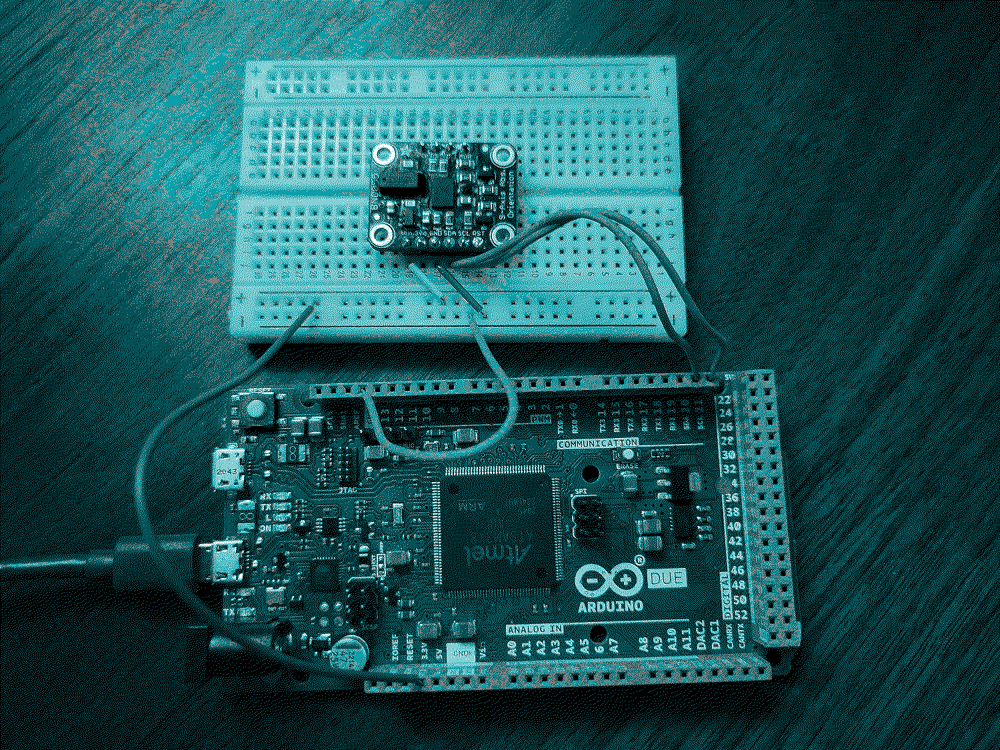
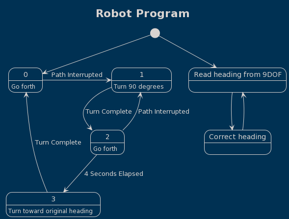
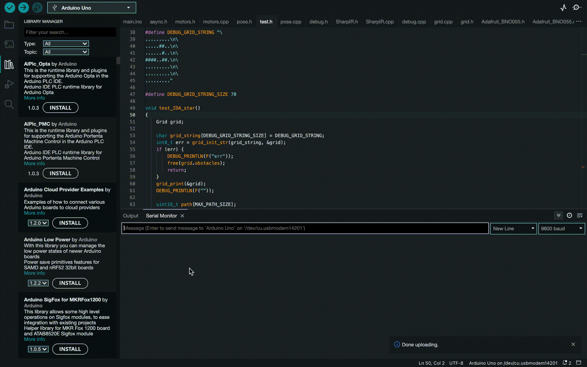

Programming an Autonomous Mobile Robot
Table of Contents

Figure 1: My Arduino Due with magnetometer
I'm the lead programmer on the robotics team at school and where working on an autonomous mobile robot. The project is sponsored by NASA's Colorado Space Grants Consortium and our robot will participate in their challenge in April. The involves traversing a variety of outdoor obstacle courses without the use of GPS. What follows is an overview of our in progress program.
Program Overview
The program is so far organized into a few loops that run asynchronously. This means that we describe distinct sequences of events which run in parrallel, repeatedly and independently of one another, over different and varying time intervals. These loops can communicate with one another by modifying the variables which comprise the state of the program.
So for instance, we have a loop which is concerned with planning the robot's path. It waits for the robot's path to be interuppted by an obstacle and then computes a path towards the goal destination using the robot's belief about its current position and known obstacles. Another loop is concerned with executing this plan. The plan for the robots future motion is part of the shared state of the program, and so the planning loop is able to communicate with the plan execution loop by modifying the plan.
The plan consists of a queue of desired destinations, represented as coordinates on a 2D plane. Going from one destination to another is broken down into two steps: First, turn to face the desired destination. Next, go forward until you've gone far enough. The plan execution loop described previously is concerned with deciding that the robot has arrived at its destination and computing the two steps that need to be taken in order to get to the next destination on the path. It modifies the plan by eliminating the next destination in the queue once it has arrived.
Another loop is concerned with the execution of the two steps necessary to go from one destination to the next: the rotation and the translation. I've called these two loops the major and minor plan execution loops in the above diagram. The major loop communicates to the minor loop by deciding those two steps, which are represented as poses. A pose combines position with orientation, so it is a 2D coordinate and a rotation with respect to the x axis. The minor loop decides that the next pose has been achieved and removes it from the queue, modifying the state of the program. This is how the minor loop communicates with what I've called the PID control loop, which is concerned with the low level control of the motors for motion control, among other things.
The PID loop is always trying to achieve the next goal pose. It uses sensor data, the robots belief about where it is, and the next desired pose to calculate a correction to be applied to the voltages currently being sent to the motor control pins. Every so often, the robot must check its sensors and then reevaluate its belief about where it is. Only then is it in a position to apply a correction to the motor control. It communicates with the other loops by updating the robot's belief about its current position and updating sensor readings.
AsyncLoop loop_obstacle; AsyncLoop loop_positions; AsyncLoop loop_poses; AsyncLoop loop_pid; void setup() { //... omitted loop_obstacle .when(path_interrupted) .then(stop) // empty the position queue and enqueue nearby position .when((void*)+[]() -> bool { // wait for the robot to stop return idx_pose_array == 1 && pose_achieved(); }) .then(reroute); loop_positions .when(position_achieved) .then((void*)+[]() -> void { // Enqueue poses, dequeue position. if (!(position_queue.empty())) { Pose_enqueue_transition(&pose_current, position_queue.front(), pose_array); idx_pose_array = 0; position_queue.dequeue(); } }); loop_poses .when(pose_achieved) .then((void*)+[]() -> void { // dequeue pose idx_pose_array = 1; // go to the second pose }); loop_pid .when(time_elapsed_ms_50) .then(update_perception_localize_and_pid); } void loop() { loop_obstacle(); loop_positions(); loop_poses(); loop_pid(); }
In the following sections I attempt to describe the components of the program in more detail.
Path Planning
We need to figure out how to decide whether an obstacle has been detected and whether it interrupts our path forward, as well as where we believe the obstacle is. We also need to figure out how to persist this knowledge in a way that will consume the least amount of memory.
Equipped with knowledge of where obstacles lie, we can model the landscape surrounding the robot as an occupancy grid.
Figure 2: This image found online shows an example of an occupancy grid.
In the field of mobile robotics, there are a variety of commonly used path planning algorithms. Originally I implemented one of them called A* (A-Star). But I quickly ran into the limits of the Arduino Uno's memory capacity so I've started implementing alternative methods which I expect will consume less memory.
For the sake of testing these algorithms and visualizing the paths they produce, I've written some code that allows us to be able to create an occupancy grid in the Arduino's memory from human readable text, and to be able to print a visual representation of the path it produces. Here's a demonstration in which we ask it to find a path from the top right corner to the bottom left:
#define DEBUG_GRID_STRING "\ ........\n\ ........\n\ ...##...\n\ ....#...\n\ ....#...\n\ ....##..\n\ ........\n\ ........" // testing our implementation of the A* search algorithm on an occupancy grid void test_a_star() { Grid grid; grid_init_str(DEBUG_GRID_STRING, &grid); grid_print(&grid); DEBUG_PRINTLN(F("")); uint16_t path[MAX_PATH_SIZE]; // [0, 65535] uint8_t path_size = 0; // [0, 255] grid_find_path(&grid, 7, 56, path, &path_size, MAX_PATH_SIZE); grid_print_path(&grid, path, path_size); free(grid.obstacles); }
The #'s represent obstacles and the .'s represent open space. It produces the following output in which @'s are positions along our path:
. . . . . . . . . . . . . . . . . . . # # . . . . . . . # . . . . . . . # . . . . . . . # # . . . . . . . . . . . . . . . . . . . . . . . . . @ . . . @ @ @ @ . . . @ # # . . . . . @ . # . . . . . @ . # . . . . . @ . # # . . . @ . . . . . . @ . . . . . . .
Based on the memory available to us, we'll have to decide how large to make the grid and how many \(\mathrm{cm}^2\) can be represented by a single grid space. More fidelity is better, but consumes more memory. Given a limited grid size, we'll also have to choose where to position the grid in the global coordinate system. One note about the grid: I was thinking perhaps we should expand the size of obstacles in the grid to account for the size of the robot and then treat the robot as a point mass.
Grid Implementation
The grid is implemented as an array of bits. 0's are open spaces and 1's are obstacles:
0 0 0 0 0 0 1 1 0 0 0 0 1 0 0 0 0 0 0 0
The indices of the above grid are laid out as follows:
0 1 2 3 4 5 6 7 8 9 10 11 12 13 14 15 16 17 18 19
typedef struct Grid { uint8_t* obstacles; // bit array uint8_t cols; // [0, 255] uint8_t rows; // [0, 255] } Grid;
The smallest data type available to us is an 8-bit integer, but we only need one bit to represent whether a given grid space is occupied. So, to make the grid take up as little memory as possible, a single unsigned 8-bit integer is used to represent 8 grid spaces, and the whole grid is just a one dimensional array of unsigned 8-bit integers.
One of the things to consider is perhaps having a non uniform cell representation in our grid, for the sake of saving memory and gaining a higher fidelity representation of the surroundings.
PID Control
The PID algorithm can be used to deal with the low level motor control of our robot. We can adjust the speed and direction of the motors using a function of the magnitude and direction of the discrepancy between where the robot is and where it wants to be at any given time, typically referred to as the error value in the context of PID. In addition to the error value \(e(t)\), PID also uses the accumulation of these error values over time \(\int{e(t)dt}\), and the rate at which the discrepancy is changing \(\frac{de}{dt}\).
\[ u(t) = K_p e(t) + K_i \int e(t) dt + K_d \frac{de}{dt} \] where \(K_p\), \(K_i\), and \(K_d\) are constants that give weight to each of the terms, and must be decided through trial and error. PID stands for proportional, integral, derivative and is named for each of the 3 terms in the equation.
In code, the integral term can simply be a running total of the error values, and the derivative term would be the difference between the current error value and the previous error value from say, 50 ms ago.
//... somewhere in our code, hypothetically: e_integral += e_current * timestep; e_derivative = (e_current - e_previous) / timestep;
We still need to implement all of this. These two videos do a good job of explaining PID control:
- Mobile Robot Systems Course - Lecture 3: Motion Control 58:52-1:10:04 https://youtu.be/tocxIukOa-I?t=3532
- PID Control: A brief introduction https://youtu.be/UR0hOmjaHp0
Motor control
What I have implemented so far is an interface for controlling the motors. First, allow me to try and motivate the need for such an interface.
There may be up to 3 pins associated with each motor, based on what I recall from the motor shields we've looked at. To go forward, we send voltage to the forward pin, no voltage to the backward pin, and send some amount of voltage to the analog speed pin which tells the motor how fast to go. And likewise, to go backward, we would send voltage to the backward pin, but not the forward pin for the motor. (I think motors on the same left/right side should share a speed pin). It's kind of a mouthful just to tell one motor to go. When we apply voltage to an analog pin (for controlling speed), we give it a number between 0 and 255 (inclusive) like so: analogWrite(pinNumber, speedNumber);. But there is some speed values in the range that aren't large enough to produce any motion.
What I thought would be really nice is if we could tell the motors what to do with a single number between -100 and 100, where 100 is the max speed, 1 is the min speed in the forward direction, 0 is off, and negative numbers are for reversing the motors. So here's an example of one such function that does that for the front left motor:
void motors_set_velocity_left_front(char velocity) { velocity = normalize(velocity); if (velocity == 0) { digitalWrite(pin_left_front_fw, LOW); digitalWrite(pin_left_front_bw, LOW); analogWrite(pin_left_front_speed, 0); } else if (velocity > 0) { digitalWrite(pin_left_front_fw, HIGH); digitalWrite(pin_left_front_bw, LOW); analogWrite(pin_left_front_speed, voltage_of_speed((byte)abs(velocity))); } else { digitalWrite(pin_left_front_fw, LOW); digitalWrite(pin_left_front_bw, HIGH); analogWrite(pin_left_front_speed, voltage_of_speed((byte)abs(velocity))); } current_velocity_left_front = velocity; }
It takes a number in the range -100 to 100 and maps it to the appropriate speed in the range [0, 255], as well as setting the direction of the motors.
We also have functions for incrementing the velocity of the motors by a certain amount [-100, 100].
// Increment (or decrement if argument is negative) the speed of the motors. void motors_increment_velocity_left(const char increment) { motors_set_velocity_left_front(current_velocity_left_front + increment); motors_set_velocity_left_back(current_velocity_left_back + increment); }
This is the interface that I expect to be used along with PID. PID tells us how to adjust the current speed and direction of the motors.
Perception & Localization
For any of the sensors we end up using, we'll need to write code that we can use to query the sensor for data. Currently we have a third party library for the Sharp IR sensor which makes getting distance data as easy as sensor_IR.distance().
There's a very real possibility that our estimate of our current position relative to the starting point won't be great and will become terrible as time goes on. The thing that is really important though is that we can maintain our sense of direction, and that's why a compass would be valuable. This way, we can make sure we are at least headed in the right general direction.
UPDATE: The challenge at the sand dunes.
We didn't end up having time to implement all the feature I had planned for. A week before the challenge in April, we discovered the robot lacked sufficient torque to be able to turn in place. There wasn't enough time left to fix the hardware, but I could make the robot do wide turns by applying more power to either side. The plan became to have the robot do many-point turns.

Figure 3: Testing out many-point turns
We also had yet to attach wheel encoders to the robot, so without the ability to localize or turn in place, I set about an entirely different strategy which involved having the robot attempt to go in the direction that was forward when the robot was turned on, and avoiding abstacles by turning away for a short time.

Figure 4: State diagram
When we got to the sand dunes we realized the courses were much narrower and shorter than we had anticipated. To accomodate this, I rewrote the driving script for our program several times while at the sand dunes, over the course of about 4 hours. Another source of difficulty we discovered at the dunes was that our IR sensors returned noisy distance readings and regularly picked up the ground, leading to false positives in obstacle detection. To deal with this, I attempted to avoid false pasitives by taking 10 consecutive measurements and only considering an obstacle detected if all measurements were within the threshold. It worked reasonably well, but we still didn't have enough space to turn with digging the robot into the sand and getting stuck.
loop_main .when((void*)time_elapsed_ms_50) .then((void*)+[]() -> void { float xl = (float)sensor_left.distance(); float xr = (float)sensor_right.distance(); int current_left = xl - ((0 - 3) * pow(10.0, 14.0) * pow((xl + 66.0), -7.42)) + 1.7; int current_right = xr - 1.718 * sin((xr + 40.8) / (11.7802)) + 1.26; // sensor calibrations for (int i = 9; i > 0; i--) { prev_left[i] = prev_left[i - 1]; prev_right[i] = prev_right[i - 1]; } prev_left[0] = current_left; prev_right[0] = current_right; bool left_detected = true; bool right_detected = true; for (int i = 0; i < 10; ++i) { if (prev_left[i] > 25) { left_detected = false; } if (prev_right[i] > 25) { right_detected = false; } if ((!left_detected) || (!right_detected)) { break; } } if (left_detected) { // back up to the left motors_set_velocity_left(-10); motors_set_velocity_right(-100); delay(2000); } else if (right_detected) { // back up to the right motors_set_velocity_right(-10); motors_set_velocity_left(-100); delay(2000); } motors_set_velocity(100); });
We were able to clear 3 of 5 obstacle courses, and we won an award for my navigation system despite that it was not in use at the dunes.

Figure 5: IDA* algorithm test, ran on my Arduino Uno.